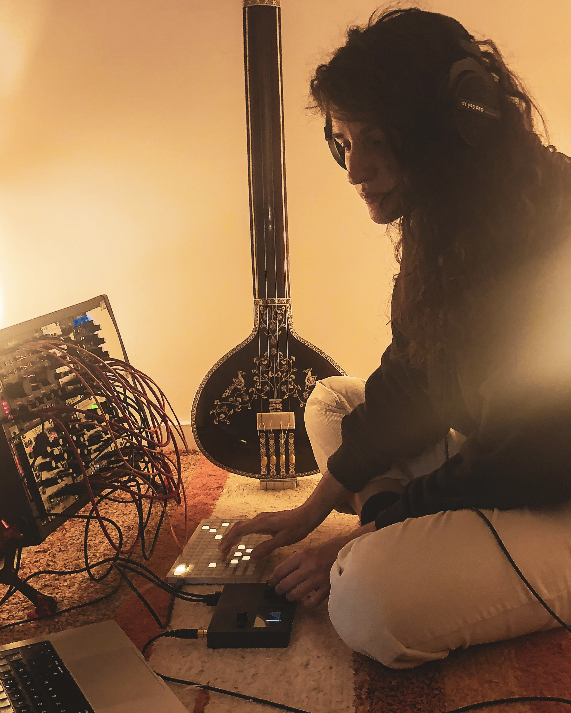

my frameworks — analog synthesis, field recording, voice, dhrupad and raga music (ICM), creative programming max/msp
i am inspired by nature in her wild, simple, unfiltered expression. in my music i explore the human multidimensional capacities, bringing technology, deep listening, resonance, consciousness, devotion and my own antenna and body in presence—in communication with nature and the field, as a part that is witnessing, processing, feeling and offering what emerges from this dialogue.
sound is for me the direct experience of feeling—to attune to our depth, move through what we are sensing, and make space for the layers of the unseen to unravel, resonate within and reveal our inner landscapes.